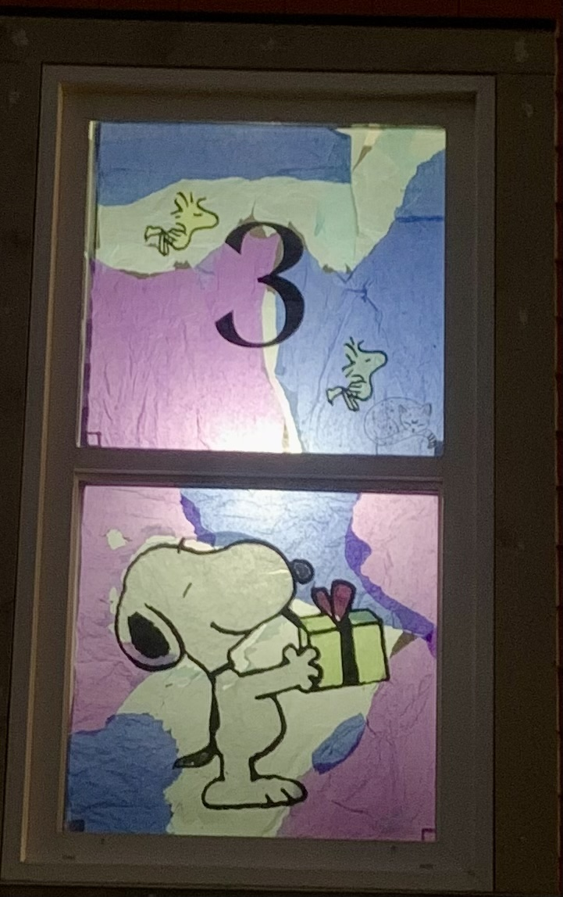

Advent Windows
Every year on december 1st my street does somthing called advent windows.
One of my neibours came up with the idea to disighn your window christmasy and add your asighned number.
A example is if my number was 7 and I wanted my christmas desighn to be the grinch I would have to make a grinch themed and include the number 7